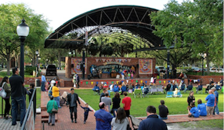
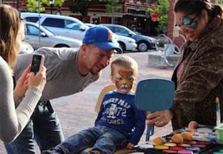
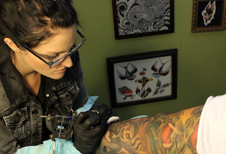
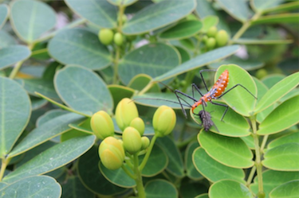

Media Portfolio
Video
This was a video of two short interviews made for my Multimedia Journalism class and was intended to accompany an article about a Gainesville event.
Photography
These photos were taken for two photojournalism courses. I was asked to produce photos of events and local workers in Gainesville.

Wide shot of Jest Fest, a family event in downtown Gainesville, Fla., in October 2013. Photo by Maria Llorens.

A family watches their son get his face painted at Jest Fest in downtown Gainesville, Fla. Photo by Maria Llorens.

A tattoo artist at Anthem Tattoo in downtown Gainesville, Fla., works on a young man's arm. Photo by Maria Llorens.

This was taken at the University of Florida as an exercise for a photojournalism course in Spring 2013. Photo by Maria Llorens.